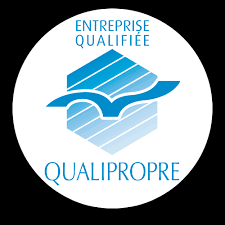
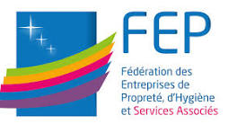

Avignon · Vaucluse · Depuis 1980
Entreprise de nettoyage
Entreprise de nettoyage
professionnel à Avignon.
Nettoyage médical, industriel, fin de chantier, vitrerie en hauteur et entretien régulier de locaux dans le Vaucluse. Depuis 1980, notre équipe familiale adapte ses méthodes à chaque site.
- 45
- années d'expérience
- 35+
- collaborateurs formés
- 100%
- basé en Vaucluse
Prestations de nettoyage professionnel
Une réponse technique,
Une réponse technique,
pour chaque enjeu.
Chantiers ponctuels, environnements réglementés, interventions mécanisées : nous mobilisons les méthodes adaptées à votre site.
Les prestations à fort enjeu.
Une équipe formée et du matériel professionnel pour les opérations urgentes, réglementées ou mécanisées.
Remise en état & fin de chantier
Après travaux, sinistre ou inoccupation : une restitution propre, saine et prête à l’usage.
- Fin de chantier & après travaux
- Sinistres et locaux dégradés
- Restitution clé en main
Nettoyage médical
Cabinets, laboratoires et locaux de santé : des protocoles adaptés aux espaces sensibles.
- Protocoles adaptés
- Traçabilité des interventions
- Consommables d’hygiène
Nettoyage industriel
Ateliers, usines, machines et sols techniques : des interventions organisées autour de votre production.
- Lavage mécanisé des sols
- Dégraissage des équipements
- Parois et vitrerie en hauteur
Nettoyage alimentaire / HACCP
Cuisines, laboratoires et zones de production : une hygiène compatible avec vos contraintes d’exploitation.
- Méthodologie HACCP
- Dégraissage technique
- Désinfection des zones sensibles
Vitrerie en hauteur
Vitres, vitrines, verrières et façades : des équipements adaptés à la hauteur et à la configuration du site.
- Verrières et façades
- Vitrines commerciales
- Accès difficiles
Traitement des sols
Décapage, cristallisation et protection : une méthode adaptée à chaque revêtement professionnel.
- Pierre, béton & terre cuite
- Parquets et moquettes
- Sols thermoplastiques
Nettoyage haute pression / parkings techniques
Parkings aériens et souterrains : des équipements capables de traiter les grandes surfaces et les accès difficiles.
- Balayage mécanisé
- Nettoyage haute pression
- Circulations et zones sensibles
Un suivi fiable, dans la durée.
Des équipes stables et un cahier des charges clair pour vos locaux occupés au quotidien.
Copropriétés & parties communes
Halls, escaliers, ascenseurs, conteneurs et parkings suivis avec régularité.
- Contrats sur mesure
- Résidences & syndics
Bureaux & tertiaire
Des espaces de travail soignés pour vos équipes, visiteurs et partenaires.
- Sols, sanitaires & mobilier
- Vitrerie et moquettes
Commerces & espaces de vente
Un environnement impeccable avant l’ouverture, du sol à la devanture.
- Horaires adaptés
- Vitrines et zones de vente
Parkings en entretien courant
Un passage régulier pour maintenir les circulations, accès et zones sensibles dans un état constant.
- Balayage planifié
- Accès routiers & piétonniers
Au-delà du nettoyage
Multiservices
Une équipe polyvalente, mobilisable à la demande, pour tous les petits travaux qui font la grande différence.
01
Maintenance immobilière
Petits travaux d'entretien, plomberie, électricité légère, serrurerie.
02Factotum
Petites réparations, montage mobilier, dépannages express.
03Espaces verts
Tonte, taille, désherbage, entretien des massifs et copropriétés arborées.
04Encombrants
Tri sélectif, évacuation en déchèterie, débarras de caves et greniers.
05Manutention & transport
Déplacement de charges lourdes, déménagements internes, mise en sécurité.
06Réaménagement de bureaux
Cloisons, sols, éclairages et mobilier coordonnés pour faire évoluer vos espaces.
Six univers,
une même exigence.
→ 01
Copropriétés &
Santé &
Commerce &
Bureaux &
Copropriétés &
syndics
Le cœur historique de notre métier — résidences, immeubles de standing, ensembles immobiliers.
→ 02Santé &
médico-social
Cabinets, laboratoires, EHPAD, cliniques : un protocole rigoureux pour des lieux sensibles.
→ 03Commerce &
espaces de vente
Boutiques, restaurants, hôtels : votre vitrine, prête à accueillir vos clients chaque jour.
→ 04Industrie
Ateliers, usines, machines et sols techniques : des moyens adaptés à votre production.
→ 05Agroalimentaire
Cuisines, laboratoires et chaînes de production : hygiène HACCP et méthodes ciblées.
→ 06Bureaux &
tertiaire
Espaces de travail, sièges sociaux, coworkings : un cadre soigné pour vos équipes.
Qui sommes-nous
Une entreprise familiale,
Une entreprise familiale,
ancrée à Avignon.
Depuis 1980, GSC Copronet accompagne copropriétés, entreprises, cabinets médicaux, commerces et sites industriels avec des prestations régulières ou ponctuelles adaptées à chaque site.
Basées à Avignon, nos équipes formées interviennent dans tout le Vaucluse avec un interlocuteur unique, des méthodes claires et une attention constante portée au travail bien fait.
Une culture de service transmise dans la durée.
Notre modèle repose sur la proximité, la stabilité des équipes et une connaissance concrète des sites suivis au quotidien.
Des agents identifiés, formés et fidélisés.
La stabilité de nos équipes garantit une connaissance fine de chaque site et une qualité de prestation régulière, avec un interlocuteur dédié.
Qualifiée QUALIPROPRE, adhérente FEP.
Des repères reconnus de la branche propreté, gages d'une organisation rigoureuse et de pratiques conformes aux standards du métier.
Qualité, responsabilité et dialogue.
Écoute attentive, contrôles réguliers, produits écolabellisés lorsque cela est possible et interlocuteur dédié pour chaque organisation.
Une qualité que l'on peut vérifier.
Certifications reconnues et équipes formées : des repères concrets pour vous engager en toute confiance.

Certification QUALIPROPRE
Une qualification qui atteste de notre organisation, de nos compétences et de la qualité de nos prestations de propreté.

Adhérent FEP
Membre de la Fédération des Entreprises de Propreté, d'Hygiène et Services Associés — la référence de la branche.
Équipes formées & fidélisées
Des agents identifiés et suivis, qui connaissent vos locaux et garantissent une prestation régulière.
Un interlocuteur unique
Un référent dédié pour piloter vos prestations, du premier devis au suivi quotidien.
Notre blog propreté.
Méthodes métier, entretien des locaux, fédération professionnelle, multiservices : des articles pour mieux comprendre les enjeux de la propreté B2B.
Pourquoi faire appel à une entreprise de nettoyage professionnelle ?
Image, confort des équipes, continuité de service et expertise : les vraies raisons d’externaliser l’entretien.
Lire le conseil →Pré-imprégnation : une méthode plus efficace et plus responsable
Une méthode qui maîtrise les dosages, limite les contaminations croisées et réduit la pénibilité des agents.
Lire le conseil →La FEP : pourquoi cette fédération compte dans les métiers de la propreté
Un repère pour comprendre la branche propreté, ses engagements, ses règles et ses enjeux professionnels.
Lire le conseil →Vos questions, nos réponses.
Les réponses claires aux questions que l’on nous pose le plus souvent — sur les délais, les zones, les certifications et notre façon de travailler.
Sur quelle zone géographique GSC Copronet intervient-elle ?
GSC Copronet intervient à Avignon et dans tout le Vaucluse, ainsi que dans les départements limitrophes pour les chantiers ponctuels. Nos équipes sont basées au siège, 13 avenue de l’Orme Fourchu à Avignon.
Sous quel délai recevez-vous une réponse après une demande de devis ?
Nous revenons vers vous sous 48 heures ouvrées avec une proposition adaptée. Pour les besoins urgents, un appel au 04 90 80 05 05 est souvent le plus rapide.
Quels types de sites GSC Copronet entretient-elle ?
Copropriétés, bureaux, cabinets médicaux, commerces, ateliers, industries agroalimentaires, parkings et collectivités. Nos prestations couvrent l’entretien régulier comme les interventions techniques ponctuelles (fin de chantier, vitrerie en hauteur, traitement des sols).
Êtes-vous une entreprise certifiée ?
Oui. GSC Copronet est qualifiée QUALIPROPRE et adhère à la FEP (Fédération des Entreprises de Propreté, d’Hygiène et Services Associés), les références reconnues de notre branche.
Quels horaires d’intervention proposez-vous ?
Nos équipes interviennent en journée comme tôt le matin ou en soirée, selon les contraintes de votre site. Nous adaptons les horaires aux usages des lieux (commerces avant ouverture, bureaux hors présence, ateliers en fin de production).
Les produits utilisés sont-ils respectueux de l’environnement ?
Nous privilégions les produits écolabellisés lorsque cela est compatible avec l’usage du site. Nos méthodes (pré-imprégnation, dosage maîtrisé, optimisation des tournées) limitent par ailleurs la consommation de produits et d’eau.
D’autres questions ? Consultez nos conseils détaillés
Prendre contact
Parlons de vos besoins.
Un projet d'entretien régulier, un chantier ponctuel, une remise en état urgente ? Décrivez-nous votre besoin — nous revenons vers vous sous 48h ouvrées avec une proposition claire.
- Téléphone 04 90 80 05 05
-
Adresse
13, avenue de l'Orme Fourchu
84000 Avignon - Horaires Lundi – Vendredi · 8h–12h, 14h–18h
- Instagram @gsc_copronet
- Zone d'intervention Vaucluse & départements limitrophes
- LinkedIn GSC Copronet